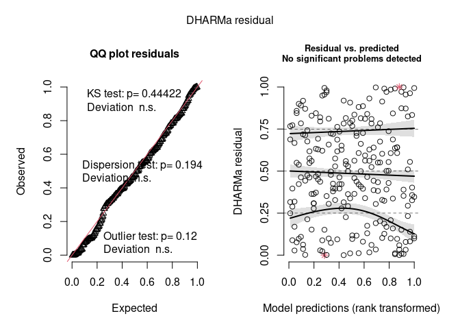
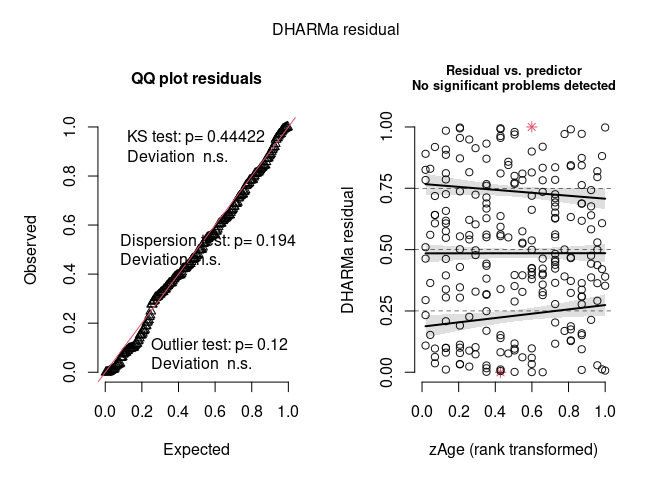
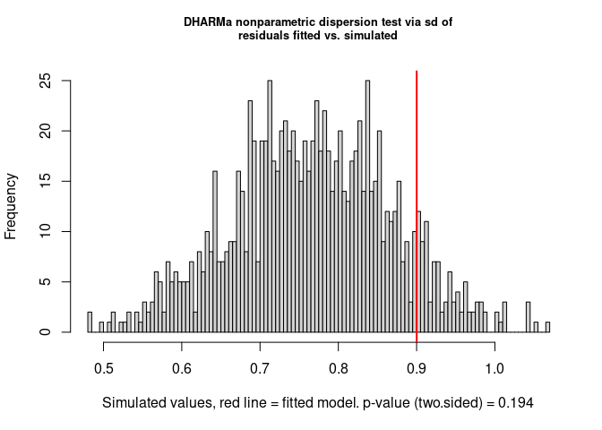

https://pakillo.github.io/DHARMa.helpers
DHARMa.helpers is an R package that facilitates checking fitted statistical models via the DHARMa package. By now, only Bayesian models fitted with brms are implemented. See this blogpost for a detailed explanation of the approach.
Example
Poisson regression
Fit model:
# Example model taken brms::brm()
# Poisson regression for the number of seizures in epileptic patients
fit1 <- brm(count ~ zAge + zBase * Trt + (1|patient),
data = epilepsy, family = poisson(), refresh = 0)
#> Compiling Stan program...
#> Start samplingCheck with DHARMa:
simres <- dh_check_brms(fit1, integer = TRUE)
Note that we use integer = TRUE in this case as we are modelling a discrete response (counts).
Now check residuals against a predictor (zAge):
plot(simres, form = epilepsy$zAge)
Test overdispersion:
DHARMa::testDispersion(simres)
#>
#> DHARMa nonparametric dispersion test via sd of residuals fitted vs.
#> simulated
#>
#> data: simulationOutput
#> dispersion = 1.1747, p-value = 0.194
#> alternative hypothesis: two.sidedSee https://pakillo.github.io/DHARMa.helpers/reference/dh_check_brms.html for more examples.